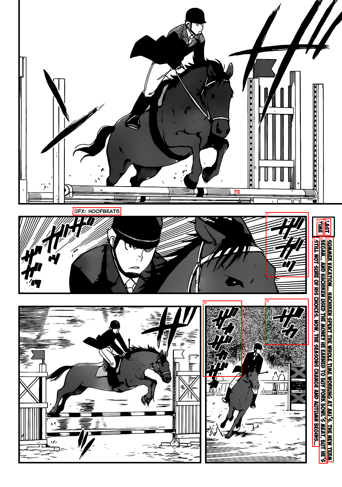
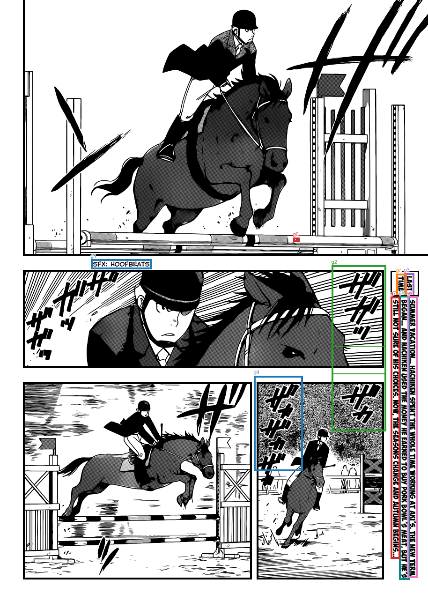

Saved TextExtractionPipeline groups, already filtered and joined. No OCR, filtering, or joining is run by diagnostics. References are comparison only; order is spatial.
Transcript TXT · All candidates and results JSON
2 SFX: HOOFBEATS チッ H LAST TIME BEGAN... AND HACHIKEN USED THE MONEY HE EARNED TO BUY PORK BOWL'S MEAT, BUT HE'S SUMMER VACATION... HACHIKEN SPENT THE WHOLE TIME WORKING AT AKI'S. THE NEW TERM STILL NOT SURE OF HIS CHOICES. NOW, THE SEASONS CHANGE AND AUTUMN BEGINS... ギッが


| Group | OCR IDs | Joined text | Target index | Reference text | Similarity |
|---|---|---|---|---|---|
| g0 | c0 | 2 | |||
| g1 | c1 | SFX: HOOFBEATS | |||
| g2 | c2, c9 | チッ H | |||
| g3 | c4 | LAST | |||
| g4 | c3 | TIME | |||
| g5 | c6 | BEGAN... AND HACHIKEN USED THE MONEY HE EARNED TO BUY PORK BOWL'S MEAT, BUT HE'S | |||
| g6 | c7 | SUMMER VACATION... HACHIKEN SPENT THE WHOLE TIME WORKING AT AKI'S. THE NEW TERM | |||
| g7 | c5 | STILL NOT SURE OF HIS CHOICES. NOW, THE SEASONS CHANGE AND AUTUMN BEGINS... | |||
| g8 | c8 | ギッが |
[]
[]
[]
[
{
"id": "c0",
"text": "2",
"score": 0.13149034976959229,
"box": [
626.0,
507.0,
639.0,
516.0
]
},
{
"id": "c1",
"text": "SFX: HOOFBEATS",
"score": 0.9964080452919006,
"box": [
194.0,
553.0,
323.0,
574.0
]
},
{
"id": "c2",
"text": "チッ",
"score": 0.2543712854385376,
"box": [
710.0,
566.0,
824.0,
739.0
]
},
{
"id": "c3",
"text": "TIME",
"score": 0.9999449253082275,
"box": [
846.0,
584.0,
868.0,
628.0
]
},
{
"id": "c4",
"text": "LAST",
"score": 0.9999324083328247,
"box": [
863.0,
583.0,
884.0,
628.0
]
},
{
"id": "c5",
"text": "STILL NOT SURE OF HIS CHOICES. NOW, THE SEASONS CHANGE AND AUTUMN BEGINS...",
"score": 0.9991817474365234,
"box": [
834.0,
633.0,
854.0,
1192.0
]
},
{
"id": "c6",
"text": "BEGAN... AND HACHIKEN USED THE MONEY HE EARNED TO BUY PORK BOWL'S MEAT, BUT HE'S",
"score": 0.9943010210990906,
"box": [
852.0,
631.0,
875.0,
1237.0
]
},
{
"id": "c7",
"text": "SUMMER VACATION... HACHIKEN SPENT THE WHOLE TIME WORKING AT AKI'S. THE NEW TERM",
"score": 0.991659939289093,
"box": [
870.0,
632.0,
891.0,
1233.0
]
},
{
"id": "c8",
"text": "ギッが",
"score": 0.1781304031610489,
"box": [
542.0,
802.0,
646.0,
1005.0
]
},
{
"id": "c9",
"text": "H",
"score": 0.21348342299461365,
"box": [
708.0,
797.0,
824.0,
920.0
]
}
]